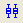
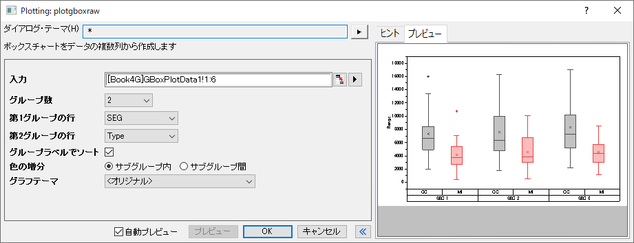
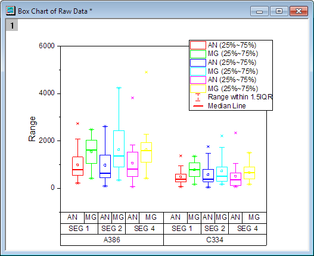

グループ化ボックスチャート-素データ
GroupedBoxCharts-RawData
Warning: Display title "Grouped Box Charts-Raw Data" overrides earlier display title "Grouped Box Charts Raw Data".

要求されるデータ
グラフはワークシート列から作成され、1つ以上の列ラベル行でグループ化してある必要があります。
グラフ作成
データを選択します。
メニューからを選択します。
または
2D グラフツールバーのグループ化したボックスチャート‐素データボタン
をクリックします。
開いたplotgboxrawダイアログで、グループ番号と各グループの元となるデータを指定して、素データからグループ化されたボックスグラフを作成します。このダイアログは、plotgboxraw Xファンクションを使用します。
ボックスチャートの作成とカスタマイズについての詳細は ボックスチャートの作成 ページを参照してください。
plotgboxrawダイアログボックス

| 入力
|
この欄は、入力データを指定するのに使用します。
|
| グループ数
|
使用するグループ範囲の数を指定します。0（グループ化なし）、または5までの整数で指定します。
|
| 第n グループの行
|
グループ化変数を列ラベル行のリストから選択します。入力列は1番目のグループ行でまずグループ化され、次に2番目でグループ化、というように細かくグループ化していきます。
|
| グループラベルでソート
|
グループラベルの昇順や、グループ行の順で階層（ネスト）でプロットを並べます。ワークシートの列は並べ替えません。
|
| 色の増分
|
グループ化ボックスに色の増分リストを使用して色を付ける方法をサブグループ内またはサブグループ間から指定します。
|
| グラフテーマ
|
定義済みのテーマのセットを含む、ボックスチャートのテーマのリストから選択します。
|
さらに、このダイアログでは作成されるグラフをプレビュー出来ます。
サンプル

|
- ヘルプ：フォルダを開く：サンプルフォルダを選択して Tutorial Data.opjuを開き、プロジェクトエクスプローラでGrouped Box Plot and Axis Ticks Tableフォルダを開いてブックBook3Gをアクティブにします。
- ワークシートMG.AN のデータは素データで、このシートの各データ列が1つのボックスとしてプロットされるように、グループ化ボックスチャートを作図します。ボックスをロングネーム、コメント、ユーザ定義パラメータ：mashineによってグループ化します。
- 列C~Nを選択して、メニューから作図: カテゴリカル: グループ化されたボックスチャート‐素データと操作し、plotgboxrawダイアログを開きます。
- グループ数を3に設定し、 第1グループの行 第2グループの行、第3グループの行をそれぞれMachine、コメント、およびロングネームに設定します。
- グループ/サブグループをソートしたい場合は、グループラベルでソート を選択します。
- グラフテーマとして、Box_Dashed Whisker Thick Medianをセットし、OKボタンをクリックしてグラフを作図します。

Note:
- ボックスのサイズや間隔を調整するには、グラフ上でダブルクリックして作図の詳細を開きます。左のパネルから一番上のプロットデータを選択し（レイヤ属性を選択している場合は、プロット欄を開く）、間隔タブ で調整します。
- ラベルを選択し、キーボードの矢印キーを使用することで、表を含めた目盛ラベルを少しずつ動かすことができます。
|
|
テンプレート
BOX.OTP (EXEフォルダにインストールされています。)
ノート
- 1つ以上のグループ数がある場合、X 軸目盛ラベルはデフォルトで表のように表示されます。表示に関してのフォーマットは軸ダイアログの目盛ラベルページにある表ツリーノードから変更できます。
- グループ数が0でない場合、第1グループ行をベースにしたグループタブのサブグループが有効になり、間隔タブでそれぞれのサブグループ間の間隔を設定できます。
- ボックスチャートの内容に適した凡例は作成/編集できます。これには、ボックスチャートがアクティブな状態でグラフ操作:凡例：ボックスチャートの内容とメニューから操作します。
- また、インデックスデータからグループ化ボックスチャートを作成する事も可能です。
- グラフテーマとしてBox_Column Scatterを選択すると、グループ化した列の散布図を作図できます。
- グラフテーマとしてBox_Connect Mean Lineを選択すると、平均値接続線付きのグループ化ボックスチャートを作成できます。
- グラフテーマとしてBox_Interval Plotを選択すると、グループ化したインターバルグラフを作図できます。